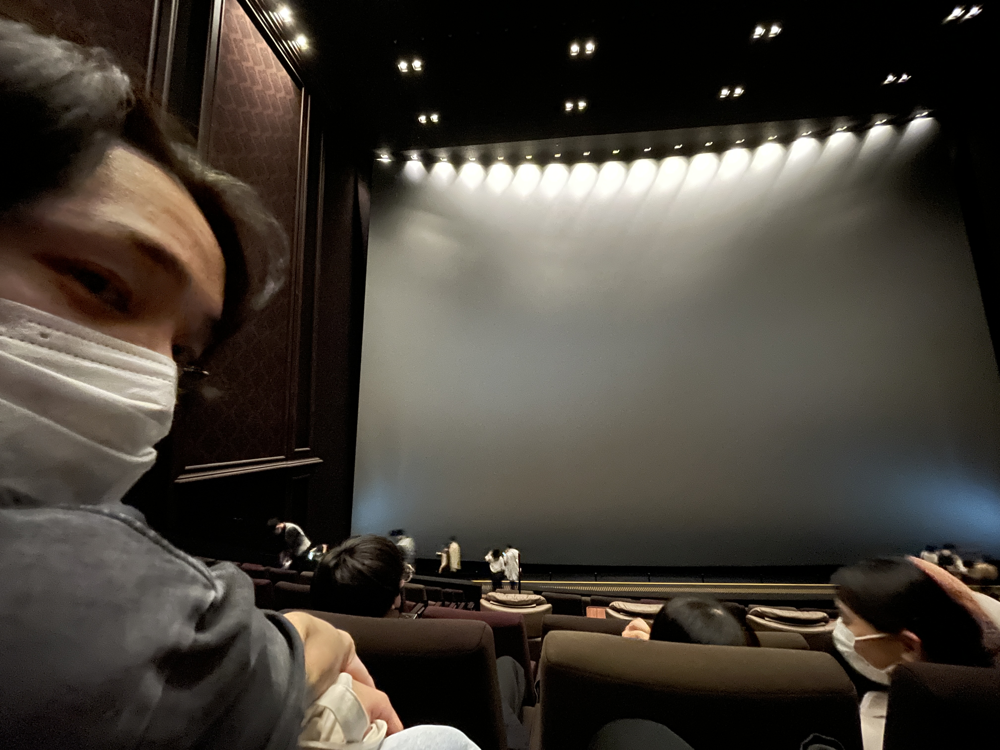
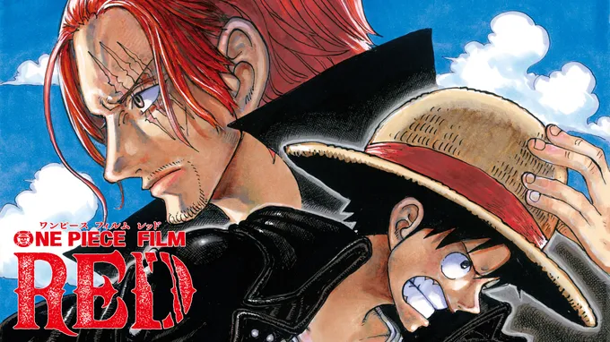
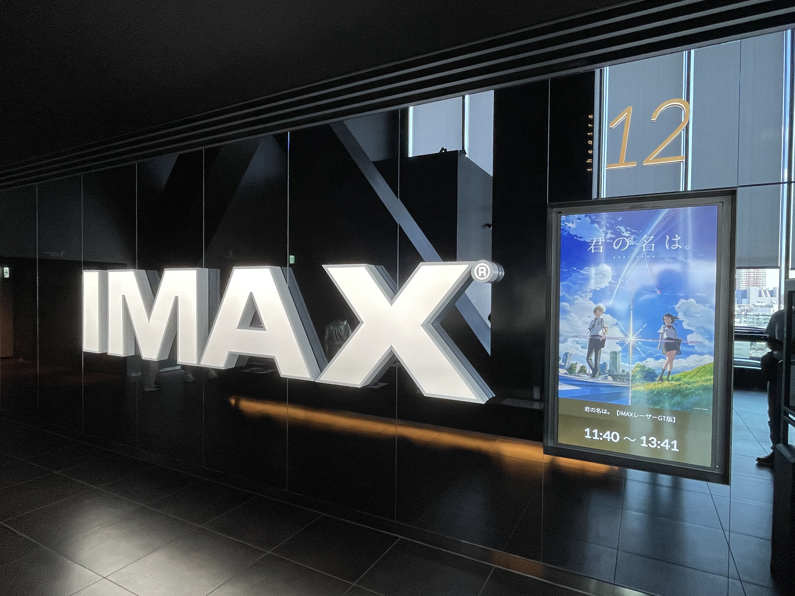
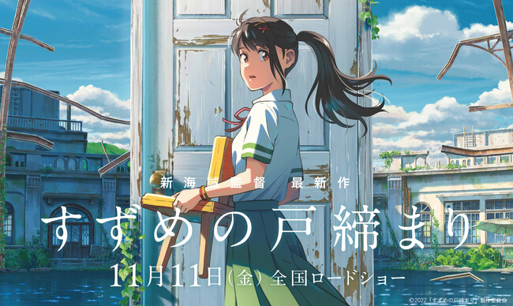
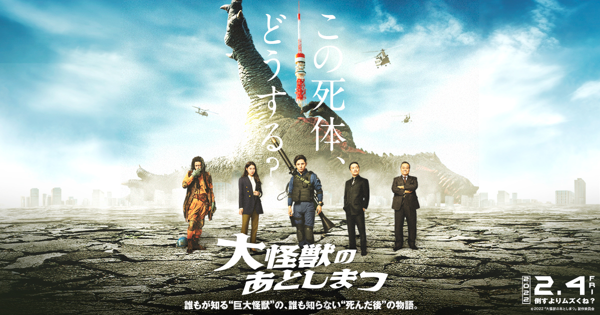
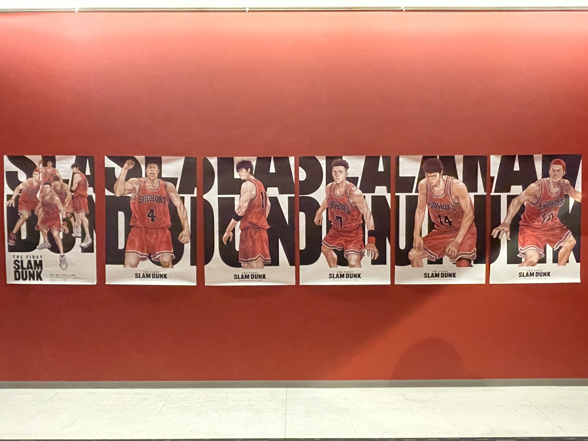

2022年に観た映画の話
映画館と映画が好きでよく行くので、去年観た映画館で観た21作品の中から個人的にとても良かった作品４選
番外編１
グランドシネマサンシャイン 池袋
2019年7月に池袋徒歩10分のところにオープンした映画館。
特徴は、IMAXのスクリーンとその音響。国内１位の大きさです。
W25.8m × H18.9mで一般的な25mプールよりもデカいです。
ここで観すぎると他の劇場がしょぼく感じてしまうのでとっておきで観に行くのがおすすめ。


第４位
ONE PIECE FILM RED
少年ジャンプにて、連載26周年を迎えたワンピースの劇場15作品目となるこの作品は劇中歌に力を入れた作品になっていました。
しかし、その反面シナリオは薄味で問題提起はあるもののその解決やストーリー性がない作品だと感じました。
また、今作はクロコダイルやエネル、ドフラなどの"分かりやすい敵"が登場しなかったため、ルフィの行動がかなりおとなしかったです。
と言うものの待ち望んでいたシャンクスの戦闘シーンや覇王色の覇気を観ることが出来たのでヨシ！
第３位
君の名は。IMAX
2016年に公開された新海誠監督作品です。RADWIMPSとの協力のもと多くの楽曲が作中に登場します。
また、作画がとても秀麗でリアルなのですが、アニメのキャラクターが浮かない程度の色彩になっていて、とても自然です。ストーリーは言わずもがなです。
新作の公開を記念して、IMAX上映されたのですが、その作画や楽曲ととんでもなく相性がよくぶっ飛びそうになりました。


第２位
すずめの戸締まり
この作品は一言で表すなら、壮大なSFラブコメです。
序盤でトラブルに巻き込まれ、愛媛→神戸→東京と環境が目まぐるしく変化していくのですが、その行き先で出会う人に助けられながら物語が進んでいきます。
そこでいいなと思ったのが、助けてもらったことに対して、仕事を手伝ったり、子供の面倒を見たりして、対価を支払っていたところです。
ただの親切で終わらないのがとてもよかったです。
また、君の名は。や天気の子とは異なり、楽曲ではなく物語やシナリオで勝負している印象を受けました。
番外編２
大怪獣のあとしまつ
ゴミの紹介です。初めてYouTubeでPVを見た時、死んだ怪獣をどうやって処分するのか?!という内容にとてもワクワクしました。
4月公開でした。本編が開始して10分経つ頃には、早く終わってくれと手を合わせていました。ドラゴンボールの実写より酷かったです。
俺だけこんな思いするのは癪なので、みんな観て時間を無駄にしてください。


第１位
THE FIRST SLAM DUNK
速攻で１位に決めました。
昨年、全面にCGを使いも自然な2Dアニメに見える「ドラゴンボール超」でアニメ映画に大きな変化が起きたと思っていたのですが、
この作品では別の角度から進化していて驚きました。
動きに合わせて、動くユニフォームや輪郭に沿って流れる汗など、あまりにリアルで映画というより、バスケの試合を観ている感覚になりました。
なので、展開やセリフをほぼ知っているのにも関わらず、シュートを決めると観客のようにテンションがあがりました。
また、マンガの持ち味の良さを損なわないように、マンガにペンで色を塗った動いているかのような理想的なアニメ映画だと私は思っています！
引用元：
スラムダンク：https://slamdunk-movie.jp/
すずめの戸締まり：https://suzume-tojimari-movie.jp/
君の名は。：http://www.kiminona.com/
ワンピレッド：https://www.onepiece-film.jp/
大怪獣のあとしまつ：https://www.daikaijyu-atoshimatsu.jp/
グランドシネマサンシャイン池袋：https://www.cinemasunshine.co.jp/